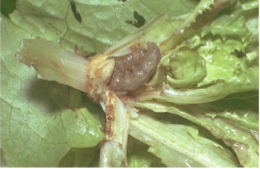
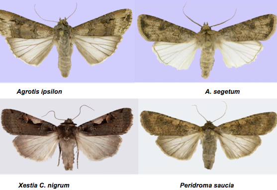
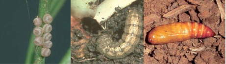

TUBER VEGETABLES :: MAJOR PESTS :: CUTWORMS
2. Cutworms: Agrotis ipsilon, A. segetum, Xestia C. nigrum and Peridroma saucia (Noctuidae: Lepidoptera)
Distribution and status
India, China, northern Europe, Canada, Japan down to South America and New Zealand. They are cool climate pests. In plains, they actively migrate to hilly regions.
Host range
Ppolyphagous pests. Besides potato, they also feed on barely, beet-root, cole crops, okra, linseed, lucerne, millets, oats, peas, poppy, pulses, tobacco, wheat etc. They can cause economic loss under favourable cold conditions in northern plains.
Damage symptoms
Young larva feeds on tender foliage and grown up larva cuts the stem at collar region.
|  |
Agrotis ipsilon |
ETL: 2 larvae /meter row
Bionomics
Moths appear after dusk, mate and lay eggs on ventral surface of leaves or moist soil. Freshly ploughed fields are preferred for oviposition. A female lays 300 to 450 eggs in 10 to 15 clusters. Eggs are globular in shape, ribbed and whitish in colour. Tiny caterpillars feed gregariously on foliage for a few days and then enter into soil.
Caterpillars are nocturnal in habit and hide during day in cracks and crevices in soil or under debris around plants. At night they come out, cut seedlings near ground level and eat tender parts. Damage is more pronounced in low-lying waterlogged areas. Full-grown caterpillars enter soil and pupate in earthen cocoons. Egg, caterpillar and pupal stages last for 2 to 13, 10 to 30 and 10 to 30 days, respectively. Total life cycle is 30 to 68 days. Two larvae / mt row is considered as ETL.
Cutworm species |
Larval description |
Adult description |
Agrotis ipsilon |
Black with pale mid-dorsal stripes. Head is pale-brown |
Fore wing is pale brown with dark purplish brown along costal end. Hind wing is white with brown tinge. Male has bipectinate antenna and female has filiform antenna |
A. segetum |
Black coloured with brown head. Triangular spots at spiracular region |
Fore wing is grey with peg and spot like marking. Hind wing is dull white. Male has bipectinate antenna and female has filiform antenna |
Xestia C. nigrum |
Brownish larva with series of black markings on lateral area |
Reddish brown fore wing with concave sunken pale area. Hind wing is dull brown |
Peridroma saucia |
Light brown with 4-7 yellowish markings on mid-dorsal line |
Reddish brown fore wing with dark brown margin. Male has bipectinate antenna and female has filiform antenna |
|  |
|  |
IPM
- Fork soil during summer months to expose larvae and pupae to avian predators
- Install light traps during summer to attract adult moths
- Install pheromone traps @ 5/ha to monitor and attract male moths
- Install sprinkler irrigation system to irrigate in day time to expose larvae for predation by birds
- Drench collar region of plants in evening hours with chlorpyriphos 20 EC or endosulfan 35 EC 4 ml/ L a day after planting
- In endemic areas, apply NSKE 5%, endosulfan 35 EC 1 L or chlorpyriphos 20 EC 1 L or neem oil 5 L in 500 - 750 L of water per ha . Focus nozzle at the collar region and apply insecticides during evening hours.